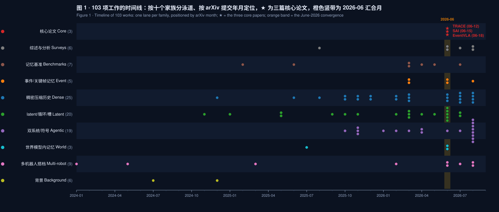
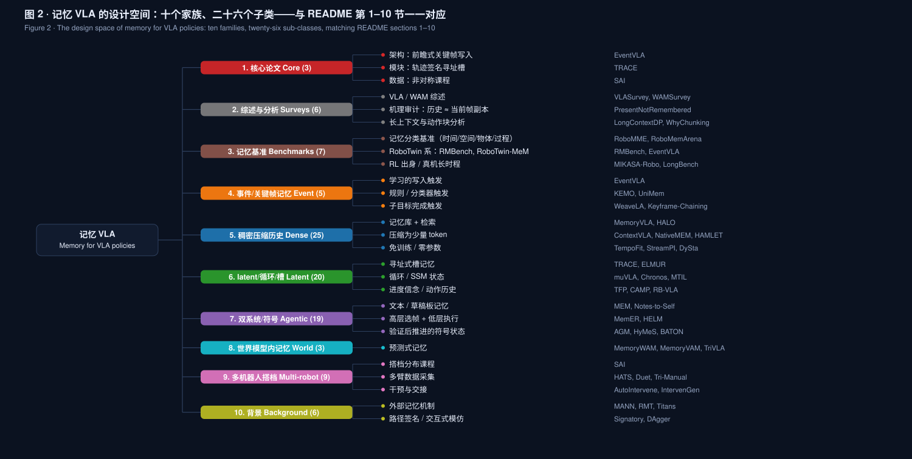

Memory for vision-language-action policies — three June-2026 papers and a 103-paper landscape
时间线（十个泳道，2026-06 汇合月）与分类树（十个家族、26 个子类）。
旧范式为什么失效 → EventVLA（架构）、TRACE（模块）、SAI（数据）各两页：机制、数字、代价、留意点。
同一目标五条路线；17 篇六问对照矩阵；RMBench / RoboMME / RoboMemArena / 真机四条证据链。
何时写 · 原图还是 latent · 寻址 · 双系统 vs 端到端 · 成本归零 · 多机器人。
趋势、十个洞见、六条可证伪预测、十四个研究机会、口径账本。
三篇论文教的三件事；仓库里有什么、怎么复现。

RMBench（3-01）、RoboMME（3-04）、RoboMemArena（5-11）三个基准春天落地，夏天的方法论文是对这些靶子的第一轮回应；三篇核心论文全部落在 6 月 12–18 日。

| 路线 | 代表 | 失败方式 |
|---|---|---|
| 双系统 | MemER, Mem-0, MEM | 延迟高、误差沿层级传播 |
| 循环 / 隐状态 | AVA-VLA, RMT | 信息瓶颈，细粒度视觉细节丢失 |
| 帧缓冲 | MemoryVLA, CronusVLA, ContextVLA | 无选择堆帧，冗余淹没稀疏证据 |
EventVLA §1–2 的诊断
Liao & Cao 对 Octo-Small / Octo-Base / CronusVLA-0.5B 做逐层线性探针 + 因果交换干预：过去帧内容全网络可解码（A₁ 0.39 / 0.36 / 0.14），但只属于历史的信息几乎为零（A₄ +0.019 / +0.015 / −0.011）；历史只在当前帧被全黑遮挡时才被因果使用，且能否用注入的历史驾驭动作因架构而异（Octo 不能，CronusVLA +0.167）。
设计准则：注入过去独有的信息，而不是更多的历史——这正是稀疏事件帧、签名增量、动作历史压缩在做的事。
USTC / 上海 AI Lab。KEM 头从 VLA 隐状态预测未来 50 步的关键帧概率，存原图，5 帧 FIFO；RoboTwin-MeM 18.0 → 75.2。
浙大 / 悉尼大学。外挂 K 槽 latent 记忆，用机器人轨迹的路径签名做读写地址；ACT 25.5 → 69.2，顺序反转 37.8。
浙大 / 悉尼大学。单遥操作者三阶段非对称课程学双机器人耦合策略；历史 token 把提前松手 64.5% → 16.1%。
| EventVLA | TRACE | SAI | |
|---|---|---|---|
| 看不见的是什么 | 消失的视觉证据 | 早期分支线索 | 搭档内部相位 |
| 记忆内容 | 原始图像帧 | 512 维 latent 槽 | GRU 隐状态 |
| 何时写 | 学习的关键帧概率 + NMS + 冷却 | 每步，门控 | 每步 |
| 寻址 | 时间拼接 + 注意力 | 轨迹路径签名 | 无 |
| 代价 | 吞吐 2.91 → 0.94 Hz | +2.1 ms / 步 | 干预数据 ≈ 30% |
p̂t = σ(MLP(ht)) ∈ [0,1]H, H = 50 ； p̂ti ≥ 0.55 ⇒ 存 ot+i
1-D NMS（w = 8）+ 冷却（C = 10）防止同一事件灌满缓冲区
事件常在一个动作块中途出现又消失，逐步分类器来不及；共享 ht 让 KEM 知道策略接下来要做什么，能预约一次写入。
RoboTwin-MeM 8 任务平均成功率 %（EventVLA 表 2）。RMBench 上仅锚帧 67.8（Mem-0 42.0、MemoryVLA 41.7）；KEM 未在 RMBench 上测。
真机 ARX ACONE 4 任务 × 20：90 / 60 / 90 / 75，π_MEM 50 / – / 30 / 40。留意：两套基准同出 RoboTwin 系；5 帧 FIFO 对 > 10 分钟任务会饱和。
ωt,k = softmaxk(⟨WQρt, WKm̄t−1,k⟩/τ√d) ； mt,k = (1−β) mt−1,k + β m̃t,k
训练与部署走同一条因果扫描：不用线索标签、分支标签、未来帧，也不做测试时演示检索。
| 方法（5 真机任务，阶段进度 %，25 次/任务） | 平均 |
|---|---|
| ACT / Diffusion Policy | 25.50 / 25.00 |
| π₀.₅（同数据微调，无记忆模块） | 50.47 |
| GRU 循环记忆 | 45.83 |
| Transformer 历史上下文 | 52.10 |
| LRU 外部记忆 | 53.93 |
| 检索提示记忆（MAP-VLA 式） | 56.30 |
| TRACE（回归 / 扩散） | 69.23 / 59.53 |
| 只有签名 / 无路由槽 / 去增量 | 45.50 / 52.17 / 61.43 |
| 变换 | 路由相似度 | 分支一致性 |
|---|---|---|
| 时间重采样 | 92.4 | 96.0 |
| 速度抖动 | 89.8 | 94.7 |
| 状态偏移 | 91.2 | 95.1 |
| 稀疏采样 | 86.5 | 92.3 |
| 顺序反转（负对照） | 37.8 | 41.6 |
同样的分岔点画面、同样的权重，只把历史倒放——"记忆在用有序历史"从假设变成测量。每步开销 +2.11 ms。
策略：ACT + 冻结 DINOv3，30 步历史（12 帧对数采样 → GRU 历史 token），级联底盘 → 手臂头；两台机器人无通信
| 任务 | 方法 | 成功 | 相位同步 | 让步 |
|---|---|---|---|---|
| Bed-throw | 独立 / SAI | 23.3 / 53.3 | 30.8 / 62.5 | 26.7 / 68.3 |
| Tablecloth | 独立 / SAI | 43.3 / 66.7 | 54.4 / 68.9 | 46.7 / 70.0 |
| Laundry | 独立 / SAI | 50.0 / 70.0 | 51.7 / 73.3 | 31.7 / 71.7 |
| Painting | 独立 / SAI | 33.3 / 56.7 | 42.7 / 74.7 | 34.4 / 68.9 |
只在"发生了什么"时写，存原图或 token。EventVLA（学习触发）、KEMO（运动学 + 视觉规则）、UniMem（事件分类器）、WeaveLA（子目标完成）。
每帧都进，靠压缩 / token 化 / KV 复用控制成本。MemoryVLA、HAMLET、NativeMEM（1 token/帧）、TempoFit（免训练）、StreamPI（零参数）、DySta。
历史压成固定向量或槽递归更新。TRACE（签名寻址）、μVLA（最小循环）、Chronos（SSM 状态）、TFP（进度信念）、GMP（何时回忆）。
高层维护文本 / 图 / 进度指针，低层执行。MEM、MemER、AGM（验证后推进）、HyMeS（记忆在代码）、PonderPounce、BATON。
记忆服务于预测，预测服务于动作。MemoryWAM（近期 + 事件锚帧 + gist）、MemoryVAM、TriVLA。
搭档相位是只能从历史推断的隐变量。SAI、HATS、Duet、Tri-Manual、AutoIntervene——几乎都在解数据采集，没有显式记忆模块。
| 方法 | 存什么 | 何时写 | 寻址 | 容量 | 接在哪 | 监督 |
|---|---|---|---|---|---|---|
| EventVLA | 原图 | 学习触发 + NMS | 时间拼接 | 5 + 锚帧 | 视觉编码器输入 | 235B 标注 + 软标签 |
| TRACE | 512-D latent | 每步，门控 | 轨迹签名 | K = 4/6 | 动作头前适配器 | 三项稳定器 |
| SAI | GRU 隐状态 | 每步 | 无 | 30 步 | 解码器输入 | 数据课程 + DAgger |
| KEMO | 关键帧 token | 运动学 + 视觉规则 | 时序 token | K 逐任务设 | 门控残差融合 | 事件附近加权 |
| UniMem | 关键帧密集记忆 | 事件分类器 | 注意力 | 关键帧缓存 | 单骨干 | 分类器 |
| MemoryVLA | 感知 + 认知 token | 每步，冗余合并 | 内容相似 | 记忆库 | 扩散专家条件 | 模仿损失 |
| MemER / MEM | 关键帧 + 文本 / 视频 + 文本 | 高层 VLM / 持续 | VLM 推理 | 选中帧 / 文本无界 | 双系统 | 语言标注 / 演示 |
| Chronos | 每步一个状态 token | 每步 | 选择性 SSM | 全历史（压缩） | 策略 latent 状态 | IMLE + 薛定谔桥 |
| μVLA | m 个记忆 token | 每步自注意力 | 隐式 | m | 骨干内 | TBPTT，无辅助损失 |
| AGM / HyMeS | 进度指针 / 代码结构 | 物理验证后 / 阶段验证后 | 指针 / 代码 | 子目标数 / 无界 | 冻结 VLA 外部 | 2.43M 验证头 / rollout 反馈 |
| AutoIntervene | 视觉-动作支持记忆 | 成功执行后 | 视觉相似 + 动作一致 | 成功轨迹集 | 策略 ↔ 操作者切换 | 分位数校准阈值 |
完整 40 方法矩阵见 insights/DESIGN_SPACE_MATRIX.md。两个极端在同一个月被占住：EventVLA 押"何时写"，TRACE 押"从哪读"；既学写入时机、又学寻址的中间地带还是空的。
成功率 %，每任务 100 次。Chronos 报 7 任务（其表中 Mem-0 为 50.8），EventVLA 报 9 任务——不可直接比。
这正是 EventVLA 另建 RoboTwin-MeM（用 n 参数化"必须记住几个中间关键帧"）的理由。
| 方法 | Counting | Permanence | Reference | Imitation | 平均 |
|---|---|---|---|---|---|
| π₀.₅ | 28.78 | 17.00 | 17.17 | 8.78 | 17.93 |
| MemER | 48.83 | 53.17 | 38.00 | 29.50 | 42.38 |
| FrameSamp+Modul（感知最佳） | 65.22 | 25.11 | 36.33 | 51.39 | 44.51 |
| AGM（Counting 子集） | 55.96 | — | — | — | — |
| PonderPounce 9B | — | — | — | — | 60.83 |
| GroundSG+Oracle（上界） | 83.86 | 93.31 | 95.17 | 63.98 | 84.08 |
每种记忆各有强项：FrameSamp 赢 Counting/Imitation，MemER 赢 Permanence；动作 token 对记忆 token 的注意力只有 0.7–4.8%
| 方法 | TSR | CSR |
|---|---|---|
| π₀.₅ / MemoryVLA / MemER | 21.5 / 15.0 / 27.3 | 38.7 / 35.3 / 49.1 |
| PrediMem（Qwen3-VL-8B，基准自带） | 38.5 | 55.2 |
| HyMeS（12 任务修正协议，160 回合） | 60.1（π₀.₅ 41.3） | 66.2（52.5） |
| Ground Truth（oracle） | 46.1 | 64.8 |
HyMeS 的口号是全场最直接的立场：技能在权重里，记忆在代码里——低层技能模仿学，高层记忆管理由编码智能体从 rollout 反馈迭代。
HyMeS 与 PrediMem 的任务协议不同（12 vs 26 任务），表内数字不可跨行比较
| 论文 | 平台 / 协议 | 无记忆基线 | 记忆方法 | 口径提醒 |
|---|---|---|---|---|
| EventVLA | ARX ACONE 双臂，4 任务 × 20 | π₀.₅ 0–10%；π_MEM 50 / – / 30 / 40 | 90 / 60 / 90 / 75 | π_MEM 为作者复现 |
| KEMO | YAM 双臂，6 任务 × 12 | π₀.₅ 聚合 TSR 27.8；MemoryVLA 1.4 | 51.4（SCR 42.3 → 76.4） | MemoryVLA 单相机、换骨干 |
| UniMem | xArm6，4 任务 × 15 | 无记忆 5.0；MemER 43.5 | 80.0 | 四路相机 16 关键帧仅 +25 ms |
| Chronos | 双 UR3 单 RGB，4 任务 × 50 | π₀.₅ 7%（记忆任务 0/150） | 78%（记忆任务 108/150） | 0.3B 参数 |
| TRACE | 双臂移动平台，5 任务 × 25 | ACT 25.50 / DP 25.00 / π₀.₅ 50.47 | 69.23 / 59.53 | 阶段进度，非成功率 |
| MemER | Franka，3 任务 × 20 | 无历史错舀 61 次；32 帧长历史 12 | 错舀 1 次 | 计数错误数，越低越好 |
| AGM | AgileX PiPER，每 N 10 次 | π₀.₅ PickXTimes 100/20/10/0/0（N=1–5） | 全部 100 | 冻结 π₀.₅ + 2.43M 验证头 |
| SAI | 两台双臂移动机器人，4 任务 × 30 | 独立模仿 23–50% | 53–70% | 协作成功率；让步为事件级指标 |
| AutoIntervene | 双臂，7 任务 × 25 | 基线 30.9%；人判切换 68.6% | 80.0% | 两轮干预后；操作者时间 122.9 s vs 179.9 s |
九个真机结果，九种口径；每行内可比，跨行不可比。
| 方法 | 触发器 | 证据 |
|---|---|---|
| EventVLA | 学习：KEM 头预测未来 50 步关键帧概率 | RoboTwin-MeM 18.0 → 75.2 |
| KEMO | 规则：关节减速峰值 + DINOv2 去重（ε = 0.05）+ 冷却 | 事件驱动选帧优于均匀采样与最近 K 帧 |
| UniMem | 事件分类器 | 93.4 vs 6 s 定间隔采样 68.2 |
| WeaveLA | 子目标完成事件 | SwingXtimes N=3：0 → 47.8，单次任务不变 |
| MemoryWAM | 事件边界锚帧 + gist token | 世界动作模型里的同构设计 |
| TFP | 液态时间常数信念，事件附近写入增益 ≈ 6× | 机制分析而非显式触发 |
2025 年的记忆 VLA 在比谁的窗口长、压缩得好（CronusVLA、ContextVLA、MemoryVLA）。RoboMME 测得动作 token 对记忆 token 的平均注意力只有 0.7–4.8%，Present-but-Not-Remembered 测得历史独有信息 ≈ 0。两条独立证据都说：堆帧堆进去的是重复。
仍未回答：哪种触发能跨任务迁移。EventVLA 靶 235B 标注、KEMO 逐任务手调窗口（w 10–40、冷却 8–60）、UniMem 训分类器——没有对照实验（研究机会 #2）。
EventVLA 的任务要同时记 3–5 个物体的颜色、位置、顺序。把关键帧压成一个 latent 向量：24.9；保留原图：75.2。UniMem 的密集空间记忆、NativeMEM 的逐帧 token 同属此类。
TRACE 的任务只需记"来自哪一侧""是哪本书"。512 维槽足够：69.23。TFP 的进度信念、RB-VLA 的紧凑信念（32.5 → 77.5）、μVLA 的 m 个记忆 token（0.42 → 0.84）都在这一档。
"按 3 次""跳过已完成子任务"目前符号状态最稳：AGM 的进度指针（PickXTimes 100）、Notes-to-Self 的草稿板、HyMeS 的代码记忆；FM-VLA 用力历史记计数（80%+）是端到端的例外。
可操作的版本：先估计下游决策要从过去恢复多少信息，再选表征。RoboMME 的结论"记忆表征效果高度依赖任务"在这里有了机制解释。
| 寻址方式 | 代表 | 对应关系来自 | 失效条件 |
|---|---|---|---|
| 时间（拼接） | 帧堆叠、EventVLA | 顺序位置，注意力自找 | 历史长时虚假相关 |
| 内容相似 | MemoryVLA、HALO | 当前观测像什么 | 分岔点画面相同 ⇒ 检索不出分支 |
| 执行轨迹 | TRACE | 走过的路（签名，保序 ~90 / 倒序 37.8） | 分支不对应运动差异 |
| 任务进度 | Keyframe-Chaining、AGM | 做到第几步 | 进度估计本身出错 |
| LRU / 槽身份 | ELMUR、MANN | 最近使用 / 固定槽 | 容量与更新策略 |
开放问题：符号状态的优势是表征性的还是只是验证机制带来的？在 RoboMME Counting 上对照 AGM、EventVLA、FM-VLA、WeaveLA 可以回答（研究机会 #12）。
| 方法 | 做法 | 开销 |
|---|---|---|
| EventVLA | 多帧原图进视觉编码器 | 2.91 → 0.94 Hz（仅锚帧已 1.07） |
| MemER | 高层 VLM 在线推理 | 约 π₀.₅ 的 5×（RoboMME 测） |
| TRACE | 签名 + 槽更新 + 读出 | +2.11 ms/步 |
| UniMem | 关键帧缓存 | 四路相机 16 帧仅 +25 ms |
| MemoryVLA | 记忆库检索 | +3.6%（0.187 → 0.194 s） |
| NativeMEM | VLA 自己的视觉编码器压每帧每视角为 1 token | 近乎零 |
| TempoFit | 免训练，复用中间层前缀 K/V | 零新增 token / 参数 |
| StreamPI / DySta | 零参数流式注意力 / 静态 token KV 复用 | DySta 2× 加速且涨点 |
| 工作 | 解什么 | 与记忆的关系 |
|---|---|---|
| SAI | 单遥操作者的三阶段课程 | 30 步 GRU 历史，提前松手 64.5 → 16.1 |
| HATS | 单人 + MLLM 智能体控四臂 | — |
| Duet | 人-人演示预训练 + 少量双机器人微调（加速 5.4×） | — |
| Tri-Manual | 三臂演示离线重排时序 | — |
| AutoIntervene | 何时把控制交还操作者 | 视觉-动作支持记忆；30.9 → 80.0% |
把"早期线索"换成"对方刚才做了什么"，SAI 的设定就是 TRACE 的延迟证据设定。SAI 的历史只有约 1 秒，记不住 B 两分钟前做过什么。
MVE：在 Tablecloth 受控延迟实验上，把 A 的 GRU 换成签名槽记忆（键 = A 自己的轨迹，内容 = 对 B 的观测），把 B 的暂停从 2 秒拉到 30 秒，报告 Yield/Wait 随延迟时长的曲线（研究机会 #14）。
AutoIntervene 已经把 SAI 阶段三"何时干预"自动化（切换指标 1.00 vs LazyDAgger 0.00 / RND-DAgger 0.90 误触发），下一步是同时纠正两台机器人。
2025 比窗口长度与压缩，2026 年中集体转向事件触发；写入触发成为一等设计变量。
原图（多比特细节）、槽 / 信念（分支变量）、符号（计数与过程）三档并存，不再有"一种记忆通吃"。
时间、内容之外出现轨迹（TRACE）与进度（Keyframe-Chaining、AGM）寻址；诊断方法随之出现。
符号状态管计数与过程，端到端事件记忆管瞬态视觉证据；PonderPounce 在缩小双系统的延迟劣势。
免训练（TempoFit）、零参数（StreamPI）、单 token（NativeMEM）三条路径合流。
一年 12 套基准；顺序反转负对照、探针 + 因果干预、隐状态干预成为新的报告项。
| # | 预测 | 怎么证伪（截止 2027-09） |
|---|---|---|
| P1 | 至少一个主流开源 VLA 基座（π 系 / GR00T / OpenVLA 后继）在默认配置里内置事件触发的稀疏记忆写入，而非固定间隔帧堆叠。 | 查发布配置与默认推理管线。 |
| P2 | RoboMME / RoboMemArena 的 Counting 与过程类子集上，端到端记忆方法追平双系统榜首（差距 < 5 点）。 | 若仍差 > 10 点，则符号状态优势是表征性的，而非验证机制带来的。 |
| P3 | EventVLA 类"存原图"方法的后继版本把推理开销压到基座 1.3× 以内（与 NativeMEM / TempoFit 技术合流）。 | 查后继论文的吞吐表；仍 > 2× 则原图记忆将被 token 化记忆取代。 |
| P4 | 至少一篇工作把 TRACE 式诊断（顺序反转负对照）用于审计非自家的记忆方法。 | 若没有，诊断只是各论文的装饰。 |
| P5 | 多机器人协作出现显式的搭档状态记忆模块，并报告 Yield/Wait 随受控延迟时长的曲线。 | 查 SAI / Duet / HATS 后继工作的实验设计。 |
| P6 | 至少两套记忆基准采用统一报告模板（RoboMME 四类 × 中间事件数 n × 指标类型 × 试验数）。 | 查基准论文的结果表头。 |
预测的价值在于能被打脸；一年后回来逐条对账。
| 数字 | 它其实是 |
|---|---|
| EventVLA 67.8 | RMBench 9 任务，仅锚帧，每任务 100 次 |
| Chronos 73.6 | RMBench 7 任务子集（其表中 Mem-0 为 50.8，非 42.0） |
| TRACE 69.23 | 阶段进度 %，非成功率；25 次/任务，Tool SE ± 17.96 |
| MemER 1 | Counting 任务的错舀次数（越低越好），20 trials |
| SAI 68.3（Yield/Wait） | 分母是事件数（60 个让步机会），不是独立试验 |
| HyMeS 60.1 | RoboMemArena 12 任务修正协议，160 回合；PrediMem 的 38.5 是 26 任务 |
| MEM 主结果 | 只有柱状图，未给精确数值；EventVLA 里的 π_MEM 是复现 |
EventVLA 只换记忆表征（原图 vs latent：75.2 vs 24.9）；TRACE 只换寻址（有无签名路由：69.23 vs 52.17）；SAI 只换数据课程（架构固定：独立 vs 搭档条件 vs SAI）。说服力来自单变量对照。
EventVLA 报延迟（0.94 Hz），TRACE 报每步毫秒与参数增量（+24.6% / +10.3%），SAI 报干预数据占比（30%）。读者能判断收益是否值得。
TRACE 的顺序反转负对照把"记忆在用历史"从假设变成可测量；Liao & Cao 的探针 + 因果干预回答"历史是不是当前帧的副本"；AGM 的表 10（核实写入 100 vs 按尝试写入 32）把"纪律"量化。
三句话带走：记忆的四问比"要不要记忆"重要（记什么 / 何时写 / 写到哪 / 存多少）；表征跟信息量走；用诊断代替猜测。
| 想要 | 打开 |
|---|---|
| 15 分钟拿到全部结论 | report/survey_slides.html · .pdf（本 PPT） |
| 系统研读 | report/survey_full_report.pdf（趋势 + 三篇深读 + 矩阵 + 103 篇解读按家族合订） |
| 三篇主角的深读（中/英） | reports/01–03_*_{cn,en}.md + reports/pdf/ |
| 趋势与洞见（中/英） | reports/04_trends_insights_{cn,en}.md |
| 研究机会 / 口径账本 / 设计矩阵 | insights/OPEN_PROBLEMS.md · NUMBERS_LEDGER.md · DESIGN_SPACE_MATRIX.md |
| 原文与中译 | papers/pdf/ · papers/zh/（QA 见 QA_REPORT.md） |
| 全部解读 | notes/（14 篇全文手写 + 89 篇摘要笔记） |
build_manifest.py → make_notes.py → make_bib.py → make_readme.py → make_figures.py → build_pdfs.py
翻译：translate_core.sh <KEY>（SuperTranslate + DeepSeek）；launch_detached.py 批量；apply_zh_patches.py 版式补丁；make_zh_qa.py QA 汇总
super_translate（翻译）· ppt-master（PPT 叙事模式参考）· anti-defensive-writing / shuorenhua（写作约束）· beamer-skill（Beamer 讲稿版 slides/）· 列表规范参考 awesome-ml4co
EventVLA (2606.20092) · TRACE (2606.14551) · SAI (2606.16490)
Present but Not Remembered (2607.03372) · RoboMME (2603.04639) · AGM (2608.29537) · Chronos (2606.30318) · KEMO (2606.23589)
所有数字只取自原文；不同论文的数字建立在各自的任务集与判定口径上，不可直接比大小。